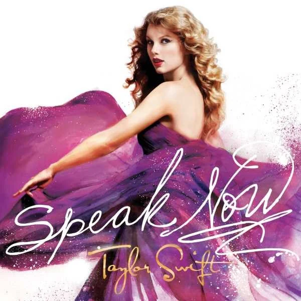

Speak Now

Speak Now (En español: Habla ahora) es el tercer álbum de estudio de la cantante estadounidense Taylor Swift, fue publicado el 25 de octubre de 2010 por el sello discográfico Big Machine Records
La producción del álbum se llevó a cabo entre 2009 y 2010 en varios estudios de grabación y estuvo a cargo de Swift y Nathan Chapman. Escrito únicamente por Swift como continuación de Fearless y descrito como un álbum conceptual suelto sobre confesiones, Speak Now amplía el estilo country pop de su trabajo anterior, pero con más sensibilidad rock, con influencias de bluegrass, pop punk, pop rock y power pop.
Tras su lanzamiento, Speak Now recibió reseñas generalmente positivas de los críticos de música, quienes elogiaron la composición y los temas de Swift. Debutó en el puesto número uno de la lista Billboard 200 en EE. UU., siendo el segundo álbum consecutivo de Swift en encabezar dicha lista. Sus ventas de su primera semana de 1,047,000 copias lo convirtieron en el quinto debut más grande en la historia para una artista femenina, el tercero más grande realizado por un artista country (el primero fue el álbum Red de Swift lanzado más tarde en 2012), el más grande en cinco años y medio, y las mayores ventas de la primera semana en 2010. El álbum también hizo historia musical al reclamar el mayor recuento de ventas de una semana para un álbum de una artista country femenina. Hasta 2017, Speak Now se ubicó como el álbum número 16 en vender al menos un millón de copias en una sola semana en Estados Unidos. A nivel internacional, debutó entre los 10 primeros puestos en varios países, incluidos Australia, Canadá y el Reino Unido. En julio de 2019, Speak Now fue certificado de platino seis veces por la RIAA, por distribuir más de seis millones de unidades en Estados Unidos. Ha vendido 4,68 millones de copias puras en el país. También es el décimo álbum digital más vendido de todos los tiempos.
En la 54.ª entrega de los premios Grammy, Speak Now recibió tres nominaciones, incluida una para mejor álbum de country; su tercer sencillo, «Mean», ganó premios Grammy a la mejor canción country y mejor interpretación de country solista. Varios críticos musicales y publicaciones incluyeron el álbum en sus listas de fin de año; se incluyó en la lista de Rolling Stone de los «50 mejores álbumes femeninos de todos los tiempos» en 2012, lo que le dio a Swift la distinción de ser la artista más joven en todos los géneros en ser incluida en la lista.
El 7 de julio de 2023, fue lanzada la regrabación del álbum titulada Speak Now (Taylor's Version), esto dentro de la controversia sobre los másteres de Taylor Swift. Esta nueva versión consta de las 14 canciones de la edición estándar, las pistas de lujo "Ours" y "Superman" y 6 canciones inéditas subtituladas como "From the Vault", todas escritas únicamente por Swift. Además, la regrabación de la canción "If This Was A Movie" que forma parte de la versión de lujo original, fue sustraída debido a ser la única canción del álbum original que cuenta con un coescritor, perteneciendo ahora a Fearless (Taylor's Version).1
.png)